SYNTHETIC PERCEPTION
ABSTRACT:
As computing technologies are woven into the fabric of everyday life, their use by tech corporations as sources of data for advertising becomes a major concern. Their attempt to mediate, categorize and quantify human behaviour on a large scale should be exposed and critiqued by any means possible. The opacity of the data-manipulation algorithms used means that the everyday user is becoming increasingly distanced from what their data is being used for and by whom. This project aims to reinterpret and critique the algorithmic processing of users through code-based video and sonic outcomes. It questions the techniques used to interact with technological surveillance, whose primary aim is to automate human behaviour for profit.
INTRODUCTION
We live in a world increasingly mediated by computing technologies. The Internet of Things is making steady progress into people’s lives, homes and workplaces through smartphones, smart appliances, and smart algorithms. This technology connects individuals and global networks in pervasive, sometimes overwhelming, ways. The increased reliance on these tools raises important questions about their effect on human behaviour and wellbeing. The simultaneous use of computing technologies for social and economic participation and profit-seeking data extraction by corporations asks that their functions be closely examined. My project exposes the connection between raw and mediated data. Computer algorithms collect data; sorting and thresholding it via arbitrary or pseudo-random parameters. In my work this is recontextualized and output within space and presented to show the processes I have applied. To start with, a physical site is captured as data, then mediated by computer-driven processing, and finally output into another site. Using algorithmic processing, data extraction, and open-sourced coding tools, I utilize within a contemporary art context the same technological vocabulary that enacts digital surveillance in order to expose its functions and meaning.
The first chapter establishes a research methodology and aims for this project. I define the critical lens through which my practice and research should be viewed, highlighting the theoretical underpinnings which drive my creative processes throughout the year.
The second chapter explores the notion of surveillance as it has evolved in the digital era. The processes and technologies that make this possible are explained and critiqued. I, then, go on to discuss the emergent logic of Surveillance Capitalism (Zuboff 2015) and Hito Steyerl’s (2013) views on the offline effect of online technologies in contemporary art. The commodification of the art object (Groys 2017) in relation to technology is briefly mentioned, before an explanation of these themes as they relate to my practice.
The third chapter revisits Guy Debord’s seminal text “The Society of the Spectacle” (Debord 1967) in relation to contemporary surveillance capitalism. How the Spectacle manifests itself in the digital everyday through the proposed “cognitive exploitation” (Barile 2017, p.152) of users is also examined. The chapter concludes with a discussion of my working processes, towards the creation of works of art that subvert or critique exploitation of users through the Situationist’s technique of detournement and Hito Steyerl’s Circulationism.
The fourth chapter continues my discussion of working processes, particularly with regard to the coding of my own algorithms and the interface used to show them. The processes of computer vision: thresholding, aggregation and cropping are explained. I then look at my development of an interface as the modulation of digital data through the work of David Rokeby (1998) and Clemens/Nash (2015). I conclude with considerations surrounding the spectator’s interaction with the work through an interface.
Finally, chapter five sees my hybrid video/algorithmic work in relation to a global network of artists. I use both contemporary and historical artworks to link the ideas of big data and surveillance with contemporary art practices as well as considerations regarding video, media and the interface.
CHAPTER ONE
RESEARCH METHODOLOGY
With the increasing mediation of our everyday lives by computing technologies come questions about their impact on human behaviour and their use as surveillance terminals for tech corporations. My research project Synthetic Perception investigates these impacts and their context in contemporary art. Through a series of works that utilize the tools of data-extraction and manipulation common in the digital era, I aim to expose and critique the structures which modify the behaviour of the individual. Furthermore, my research looks critically at the current era of big data filtered through a revised application of Guy Debord’s ‘Society of the Spectacle’. I will approach the processes of data extraction and manipulation via Debord’s notion that the Spectacle mediates social relations and human behaviour into a form of representation; and that this spectacular image then becomes the central point of social communication in the modern world (Debord 1967, p.13). This idea will be addressed in practice and research, updating it to account for our present era of computer run, data-driven commodity capitalism.
Taking the guise of a digital content creator, I will use the forms native to digital culture: networked video, YouTube reviews, vlog and online video to create a detournement of the updated Spectacle. The use of these formats of cultural production and consumption reflect the changes evident in the digital era. (Clemens Nash 2006, p.8) Translated to a display interface and synchronized over a network, the “raw” data becomes meaningful only in it’s ready compartmentalization by human perception. This occurs in an age where authenticity is in doubt and the real/virtual divide is fragmenting and collapsing.
CHAPTER TWO
Using the user: Behavioural Quantification and Surveillance Capitalism

Fig 1: Dynamic video data aggregated into a single image (2019)
The widespread use of data extraction and collection by large corporations such as Google and Facebook as well as government surveillance agencies has led to an emerging form of capitalism defined as “Surveillance Capitalism” (Zuboff 2015, p.75). Surveillance is not anymore limited to closed circuit cameras networked to a remote TV screen in a darkened room. Instead huge de-centralized server networks store personal data generated by internet users and scrape it for insight into human behaviours of consumption. The platforms for sharing and connectedness developed by these corporations are in large part motivated by the pursuit of profit and advertising revenue. The old journalistic adage of “there is no such thing as a free lunch” applies wholly to the digital age. The free platforms on which social content is shared in fact contain elaborate and sophisticated advertising platforms run by algorithms hidden from the user. These algorithms create connections between content clicked and shared online by individual users as well as tracking a personal history of what has been clicked before. Through tracking cookies and JavaScript plugins, a database of the user’s patterns of behaviour across internet platforms can be created and populated with lucrative demographic information to be sold to advertisers. Thus, it is in the interest of large tech companies such as Google and Facebook to encourage users to create and share content, as well as engage with computing technologies in as many contexts as possible (Zuboff 2015, p.79).
In many cases what once may have been authentic and distinctly human behaviour - exploring a place, connecting with friends and family, and seeking out information and knowledge about the world around us, is increasingly mediated by the platforms which make this possible online. The difference between the organic or human impulses which drive this behaviour and the tools which supposedly facilitate them is that the platforms have been created to encourage certain types of behaviour. Google autofills searches based on your history, very convenient but also an expression of determinism - what you wanted to find has been searched by other people beforehand, and can be quantified within a larger dataset of searches that occurred before you even thought to search (2015, p.83). Facebook tags images with yours and other’s faces and curates your news feed with the content that an algorithm has determined is substantial to you. This creates a feedback loop between organic and suggested behaviour. For Zuboff, this is the work of large tech companies into the commodification and quantification of human behavioural patterns (2015, p. 82). The digital era marks a shift in the balance of power from those with ownership of the means of production to those “with the means of behavioural modification” (2015, p.82). These techniques of ‘human hacking’ can take many forms but they are in essence an attempt to exploit vulnerabilities and natural impulses in humanity in order to increase engagement with digital platforms. It is no coincidence that notifications on your smartphone initiate a dopamine rush, or that it is becoming harder to just watch one video on YouTube.
What was once a highly desirable engineering tactic is now being seen to have untold effects. For example, since 2019 Instagram has piloted a feature that hides likes from the platform; meaning users would need to choose to see how many likes an image or video has after seeing the content (Wong, 2019). This has sparked criticism about the mental health effects of “vanity metrics”: the amount of likes and shares one receives for a given post. The false correlation of the value of a post with the amount of likes it gets is seen to be a psychologically damaging experience, especially for younger social media users (Wong, 2019). Importantly, with the increasing pervasiveness of these platforms into the social life of millions of people it becomes a lot harder to opt-out or find alternatives without becoming alienated from what forms a sizeable chunk of social communication in the digital era.
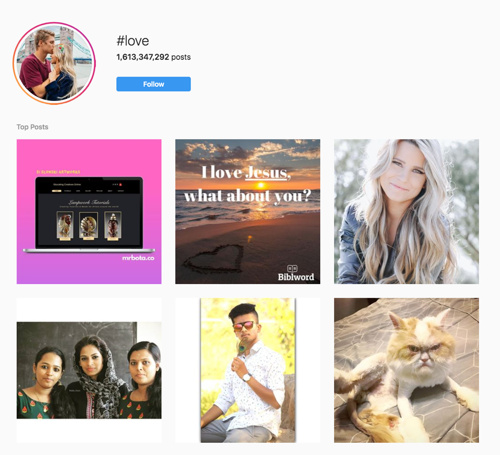
Fig 2: #love on Instagram, top posts Jun 2019
Steyerl (2013) argues that the Internet and its linked technologies have begun to move offline: meaning the effects of online behaviour are becoming profoundly intermingled with the reality of everyday life. The effect of this is a world where image and reality have formed a dependent relationship - a era where “image and world are in many cases just versions of each other” (Steyerl 2013, p.6). Steyerl updated her argument in a 2018 New York Times article, proposing that reality has now become the victim of “technological disruption” (Steyerl 2018); and that the once utopian vision of digital technologies as platforms for connection and information have instead become invasive technologies for identification and social-ranking via likes, clicks and hidden metrics.
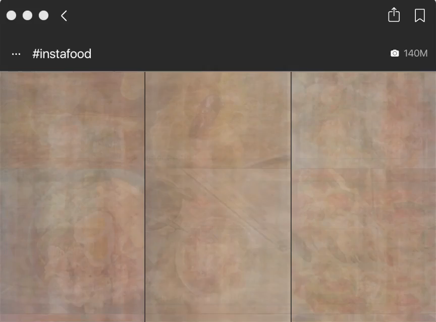
Fig 3: Still from InstaFeed (2019), Scrolling screen capture run through averaging algorithm
In his 2017 essay, “Art, Technology and Humanism”, Boris Groys investigated the link between Art, Technology and Commodification. Groys cites Heidegger’s idea that technology is essentially/primarily developed as a means of immunizing humanity from change or accident (Groys 2017, p.1). To achieve this, it is necessary to create technologies which store, quantify and make available resources (Groys 2017, p.2). The inevitable conclusion of quantification is that the “human beings also begin to be regarded as a resource” in relation to that technology (Groys 2017, p.2). For example, during the Industrial Revolution artisans became factory workers; and, later, those factory workers became information workers as white-collar office jobs became the norm. For Heidegger, this creates a degrading condition where a person is commodified into a thing, largely, a piece of exploitable “human capital” (2017, p.2).
For Groys, art is a more complex form of commodity. He points out that while most commodities are destroyed through the act of consumption, art is not (Groys 2017, p.2). Although artworks can also be consumed and used as tools for conveying meaning, they are free from a prerequisite of consumption/destruction and, instead, the consumption of art is amended by its contemplation (Groys 2017, p.2). To Groys, art as presented on the internet becomes a part of daily life. It is viewed as documentation of a “real working process taking place in the real, offline world” (2017, p.9). This narrow definition does not include art which is supposed to exist on the internet itself or which cannot be documented through images, text, video or sound in a consumable way. However, it seems obvious that on the internet the consumption of art takes place alongside social networking, communications, and practical activities as part of a user’s daily internet-life. As Groys notes “there are no walls in internet space” (2017, p.11), but there are definitely thin links which connect user activity online. Third-party advertising websites keep tabs on user activity which feed ‘personalisation’ algorithms. This means that the consumption of art is also linked to the same methods of data-surveillance which are used to track social and economic behaviour of individuals.
For my Honours project I have created networked applications that seek to disrupt or expose the links between art seen on and offline. In Shibuya Threshold (2019), I hijacked a public Surveillance Camera and fed it through a thresholding and restructuring algorithm hosted on a remote server. The reformed image was then re-presented as a live feed, online, to which viewers received a link. This work is not simply a documentation of real-world activity viewed online: It is a work made from data found online and then hosted elsewhere – essentially, a direct connection between the server hosting the camera feed, the server hosting the app, and the user’s computer.
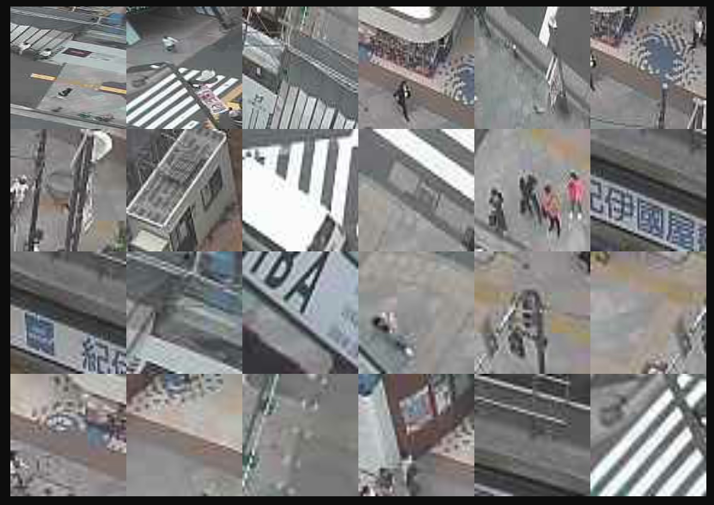
Fig 4: Shibuya Threshold (2019) Live video feed manipulated by thresholding algorithm accessed 11 June 2019.
Data extraction and manipulation via thresholding and tracking algorithms has also been explored in other recent works. Using OpenCV, an open-source library initially developed by Intel, I investigated different methods of data extraction and quantification through computer vision. These methods are the aggregation of video frames, cropping and restructuring images using bounding boxes, and the storage and dissemination of artworks on remote servers. The major difference between my implementations and those of the dominant technology companies is that of intention, transparency, and indeterminacy.

Fig 5: Still from factorybuys.com.au website: algorithm suggests products for consumption.
Firstly, my intention is not to profit from or accumulate data in order to advertise to users. My algorithm deliberately searches for data within image and sound which human beings would not find useful or valuable in any constructed way. Human subjects are fragmented and de-identified by the processing of the sound/image data. In one outcome, the informative content of the video and sound feed is broken up to the point of incomprehensibility. This encourages audiences to view the original data and its mediated form on the same plane. Secondly, my code is transparent and posted on GitHub under a Creative Commons license. Anyone who wishes to see how the data is being extracted and processed is free to download the code and try it out for themselves. Thirdly, the algorithm is indeterminate; it breaks up the data in a nonlinear or pseudo-random way, placing mediated and unmediated on the same plane of meaning. The algorithm is content-agnostic (and extensible). It attempts to organize all content in the same way, be it a YouTube video, a live surveillance feed, or a video produced by myself. To the algorithm, human behaviour and features are judged on their transitions from a contrast of brightness to darkness — a feature of an arbitrary integer value rather than the content’s implied meaning.

Fig 6: Study in thresholded video, April 2019

Fig 7: Networked Mediation (2019), installation view
My coding investigations are accompanied by work with the presentation of the computer as sculptural object. This includes foregrounding how the content is presented via the removal of certain important functional elements. This aims at explicitly undermining users’ expectations of the computer interface. By removing the keyboard and mouse and automating certain network functions my aim is to encourage users to question their own expectations of agency and control with regards to such interfaces. This agency, as shown by Zuboff and Barile, is largely illusory — the freedom of choice in online behaviour is mediated by algorithms which attempt to quantify and automate human behaviour. My research addresses this by questioning the interface of the computer and the real level of control users have in their online and offline behaviour.
CHAPTER THREE
The détournement of networked data: Restructuring surveillance and the Spectacle
Guy Debord’s seminal text “The Society of the Spectacle” was created in an atmosphere of social unrest and agitation associated with the Situationist Movement in late 1960s France. The movement was born as a reaction to the rapid industrialisation and modernisation in post-war Europe (Briziarelli & Armano 2017, p. 18). Crafted in this context, it is now widely regarded as an impassioned critique of the invasion of late-stage capitalism into the life, mind, and desires of the modern individual. It is also a historical text associated with the rise of modern consumer culture in Western countries at the time. While the Spectacle is redefined multiple times in Debord’s text, it can be understood as a way of viewing a process of alienation and mediation into an individual’s life perpetrated by dominant power structures in commodity capitalism (Debord 1967). In Debord’s view, the machinations of moden capitalism represented by the Spectacle had at the time of writing reached unprecedented levels. It had become connected with and partially appropriated everyday life through the mass media and consumer culture.
The Spectacle mediates the social, economic, and political relationships of the individual with the world around them, but also with the construction of their own self-image (Debord,1967). Further, the Spectacle alienates the individual from their supposed real or authentic desires, morphing social life from being, to having, and then appearing (1967, p.16). It is important to note that while the Spectacle was disseminated through mass media it was intended by Debord to be understood as a more general process of mediation into the life of the individual (Briziarelli & Armano, 2017), in which media and Spectacular events were just parts of a greater whole. This critique was influential and, arguably, effective as an indictment of the more simplistic forms of financial capitalism rampant at the time of its writing because, in that period, there was a much more top-down hierarchical relationship between the media, advertising and consumers. This hierarchy mainly existed through technologies like television, radio, and newspapers.
With the advent and wide adoption of the internet and computing technologies since the late 1990s, a phenomenon that has made the individual’s relationship to media more insidious and symbiotic, it is now imperative that Debord’s Spectacle is updated to bring it in line with the processes that drive digital consumer culture. One approach to this is presented by contemporary scholars who see Debord’s Spectacle as the complex unifying force which “colonises most spheres of social life by the processes of commodification, exploitation and reification” (Briziarelli & Armano 2017, p.17). These processes are the methods by which the modern individual is alienated from their unmediated or authentic desires. Barile argues that the Spectacle manifests itself in the contemporary era via the “cognitive exploitation” of the consumer (Barile 2017, p. 152).
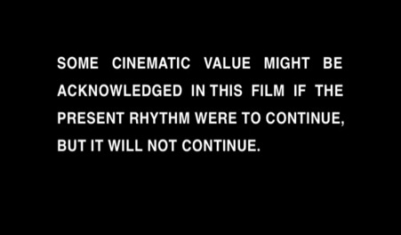
Fig 8: Still from The Society of the Spectacle (1973), Guy Debord
The Spectacle, in this way, encourages users to upload their own content, but also to tag and create networks between their content and others (Barile 2017, p.154). By the self-creation of networked or aggregated content, demographic data can be extracted and exploited for advertising. In effect, the user is conducting their own market research by signifying their values and constructing a personal brand. This data can then be analysed to “extract the main qualitative information about his/her preferences, tastes, feelings etc.” (Barile 2017, p. 154). The conclusion of this form of Spectacle is the creation of a consumer that, through self-branding and uploading of content, actively participates in their own exploitation. Their everyday life, uploaded as data and self-organised through tags and links, becomes a cognitive commodity that can be exploited. Furthermore, as these data-analysis algorithms are only ever revealed to the user through an interface that hides their true machinations, there is a real problem with the lack of transparency associated with these algorithms. This feature makes exploitation of consumer data possible.
One of the central tenets of a Situationists’ agenda was the critique of everyday life (Briziarelli and Armano, p.18). For them, daily subjectivities of the individual had to be defined, analysed and critiqued in order to extract their links to the machinations of late-capitalism. Further, this process of critique of everyday life could eventually lead to a higher point of self-awareness, where the individual is able to identify the processes that shape their subjectivities. The individual would then, hopefully, be empowered to choose at which level they will engage with these constructs. In my research I have worked to expose the processes that drive Surveillance Capitalism and Spectacular Culture through the appropriation and exposition of the algorithms and interfaces that form the primary drivers of the Information Economy. One method I use is the creation of a détournement. A détournement attempts to create a counter-Spectacle activity by utilising the techniques of mass-media dissemination in the creation of new, revolutionary artworks. The aim of these techniques is to expose those processes that make the Spectacle possible, but also to better ground the individual to their place in history (Briziarelli & Armano 2017, p.20).
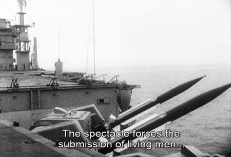
Fig 9: Still from The Society of the Spectacle (1973), Guy Debord
In 1973, Guy Debord directed a film version of The Society of the Spectacle. This film accompanies a reading of the text with images gleaned from pop culture. The Vietnam War, fashion models, political figures, and movie scenes feature as symbols of the Spectacle in mass media. It presents these clips seemingly disconnected from the text: sometimes the content on screen is synchronised with the narration, other times it is not. This rather heavy-handed filmic construction appears somewhat dated to 2019 eyes as it utilises some of the more superficial manifestations of the Spectacle in an effort to create an access point for an audience specific to the time. The main ideological thrust of this combination of images and text is to suggest a correlation between these images and reflections of the Spectacle in everyday life, taking the theory and discourse of the Situationists and connecting it to visions of the world.
In the context of digital culture, many of these spectacular processes have shifted online through the behavioural patterns encouraged by social media and sharing platforms. In light of this, an effective détournement in the contemporary era that didn’t include networked video, or incorporate some of the processes used to share data on digital platforms, would be critically flawed. Hito Steyerl’s (2013) updating of detournement, which she terms Circulationism, involves refocusing from the creation of a unique, singular image as artwork. In its place she envisages an artistic practice that manipulates and restructures found images (and data) in order to expose the “public relations of images across social networks” (Steyerl 2013, p.7). Tapping into detournement’s theoretical ancestry as a Situationist concept, for Steyerl, Circulationism is the rearrangement of images to show how they are presented and shared, rather than just as content-carriers in and of themselves. An example of Circulationism as practised in Steyerl’s own work is Factory of the Sun (2015). There Steyerl uses post-production techniques associated with video games, YouTube videos and other aspects of digital culture to construct a narrative which presents workers forced to create artificial sunlight through dance routines. Ideas and approaches like this have informed my thinking and work in the development of the algorithms that underpin my practice-led approach. I created videos using both live-feeds and ripped YouTube videos which are run through thresholding and sorting algorithms. This encourages questions on how images are constructed, communicated and produced.
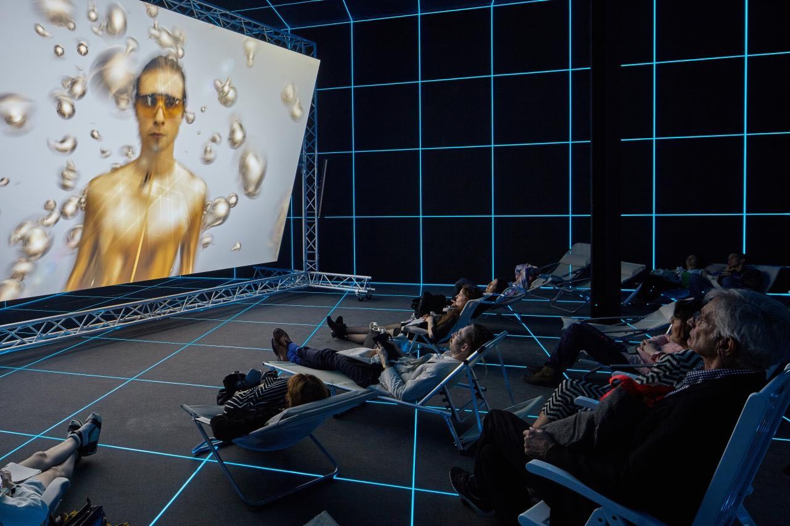
Fig 10: Hito Steyerl, Factory of the Sun (2015)
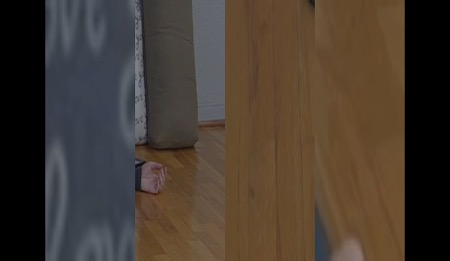
Fig 11: Still from Restorative Circulation (2019). Thresholding algorithm processes restorative yoga video found online
CHAPTER FOUR
User Interface Design: Algorithmic Mediation in Practice and Process
This project is focused on the creative and critical possibilities of experimental artistic applications of Computer Vision algorithms. Computer Vision is an area of research where image data is processed by computers attempting to synthesise qualities of human vision. It is primarily concerned with the classification, quantification and tracking of objects within image data. One method to achieve this is the use of a contrast-based detection algorithm.

Fig 12: Bounding boxes drawn on raw image, Sep 2019
To a computer, an image is perceived as a constantly shifting stream of binary data. An image is captured through the lens of a camera to a sensor and stored as a file. This file is retrieved and streamed through a codec to software that loops over this data and interprets it on a screen. When received by most software, that colour is represented as a separate value from zero to 255 in an array. In an 8-bit RGB colourspace, an all red pixel would appear to be (255, 0, 0), a green, (0, 255, 0) and a blue (0, 0, 255). These pixel streams are read in a loop each time a frame is read from the file; and each pixel is stored in an array which can be retrieved, manipulated and read. In the OpenCV algorithms, RGB images are converted to greyscale, where each pixel is represented as a single luminance value between zero and 255.

Fig 13: Bounding boxes drawn on binary image, Sep 2019
Further thresholding creates a binary image, which limits these values in search of areas of brightness in the frame. If a detected contrast of luminance values passes a certain threshold, then it can be ascertained that there is a subject and background, or a region of interest (ROI) within the frame. This ROI can then be cropped and saved for later use or identified by a bounding box surrounding it. I began by finding these regions of interest in image data with static thresholding. Next I converted the image to a series of pixel values between 0-255 and, searching through each pixel, I would target similarities and contrast ratios within an image that pass a certain threshold. The algorithm then extracts the ROIs within the frame and sorts them from largest to smallest.
To a computer, an image is perceived as a constantly shifting stream of binary data. Changes in the region of interest occurred on a frame-by-frame scale, leading to output videos that would frenetically switch content many times a second: a timescale that was not human-readable. This, however, had the effect of generating a feeling of nausea in the viewer, as the image changed too quickly to identify specific details within the frame. The level of abstraction created by this raw thresholding algorithm, while of some interest, undermined the legibility of the content of the video being processed to such an extent that the content became redundant.
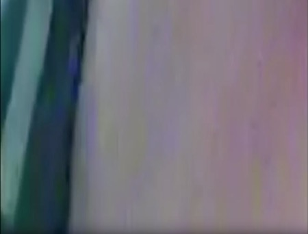
Fig 14: A low resolution Region of Interest (ROI) drawn from a video feed.
This was the extreme end of computer vision — the images were being cropped so fast that the computer could process them, but I could not. To continue my experiments I understood that I needed to slow things down. I needed to give the computer a steady gaze, one that picked details selectively from within the frame and held them long enough for an audience to gain some insight into their meaning. This would allow the spectator to get a better idea of the details being picked out by the algorithm as a point of access, and the necessary frame of reference that this was in fact video content, not generated visuals. I experimented with a procedure called ‘aggregation’ to achieve this. Aggregation takes a number of video or live input frames and blends them together over time, showing the patterns of movement present within a video. From extensive experimentation I understood that I could slow the timescale of the thresholding mechanism to something more humanly readable by aggregating frames before processing the output. This aggregation is controlled by an alpha value, which regulates the weighting of frames over time. For example, an alpha value of 1 would show the frames in real time, whilst an alpha value of 0.01 would show those frames averaged in real-time divided by ten. For a 24fps video with an alpha value of 0.01, 24 frames would be accumulated in order to output one second of content. I found that by averaging movement in the data before thresholding and cropping, I could slow down the rate of change that occurred in processing to bring it closer to a format that’s humanly readable.
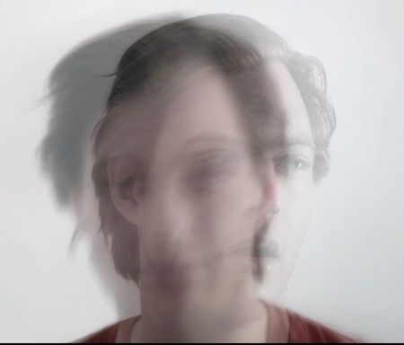
Fig 15: Aggregation Study, Aug 2019
From there I proceeded to experimentation with recomposing the output image onto a grid. The code would find the regions of interest in an image, store them in an array and then output them on a grid with a predefined size. The size of each ‘cell’ is a division of the width of the output image, so for a 1920 x 1080 input resolution to be divided into 2 cells, a cell size of 960 would be required. Further subdivisions of cell size created a grid which would show more details within the frame. The methods of thresholding, cropping, aggregation and recomposition formed the main algorithmic manipulations enacted on the image data. The sound component of the feed was processed in a similar way. Areas of silence within a file would be sought by the algorithm, skipping around in a buffer to an area of predefined loudness.
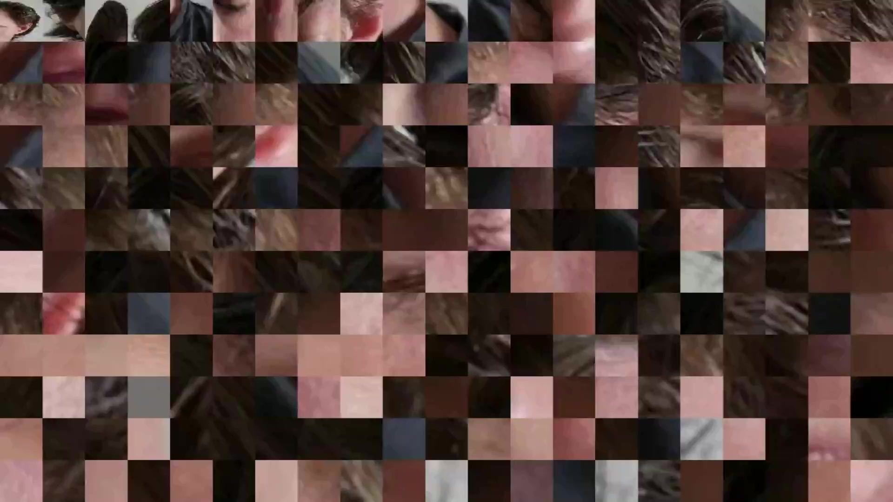
Fig 16: ROIs recomposed on a grid, Aug 2019
As discussed in previous chapters, the main methods of surveillance used by major corporations upon against the individual today take the form of data extraction and manipulation through computing technologies (Zuboff 2015, p.79). Once I understood the literal and symbolic links my work on thresholding and aggregation algorithms had with such data extraction and manipulation, I attended more closely to methods by which the spectator might productively and critically interface with the video work itself. David Rokeby in The Construction of Experience: Interface as Content (1998), discusses the relationship between audience, media and interface in art (Rokeby 1998, p.1). For Rokeby, the direct visual experience of images on a display medium, such as a TV screen, remains a thing that “happen to you” (1998, p.1). To avoid such a passive spectatorial relationship in my work I experimented with methods of constructing an display interface that might, in addition to ‘showing the content’, also evoke questions about how that interface functions. Specifically, I wanted to explore how video data is transmitted, manipulated and stored. The computer terminal, specifically the desktop computer, is today still one of the most representative objects through which the spectator interacts with surveillance algorithms directly. It was my hope that the use these interfaces would provide a contextual basis for further experimentation. Towards highlighting the connectedness of global surveillance, I used multiple networked computers, with each terminal sharing the same “raw” dataset and processing it in a progressively fragmented way. This created a server-client structure to the network and enforced a hierarchy between the most humanly readable and the least.

Fig 17: Mockup Diagram, Mediation #1 (2019) — showing linear screen structure
Rokeby writes about the considerable gap in potential between human perceptual interfaces, sense and memory, and that of computing technologies (1998, p.4). The relationship between the spectator and the work will always involve a perceptual constriction in order to fit the human’s presence and actions to the interface (1998, p.4). This sentiment echoes my initial struggles with human readability as a result of algorithmic mediation. In light of this understanding, it was important that the user’s experience be carefully adjusted to encourage the human perceptual system to respond actively, rather than assuming that the content, or the interface, will synthesise associations on its own. To contend with the incredibly complex and varied experience of human perception, the designer of an interface must ensure that it only does a few things, but does them very well. This underscored what was at issue in choices made regarding the work’s interface. For example, to enhance the perceptual impact of the work I wanted to create associations with an everyday interface, such as a computer or smartphone. For Rokeby, a key aspect to the creation of interfaces is time; The longer a person spends using an interface, the stronger their association with it (Rokeby 1998, p.2). Therefore, an interface such as a YouTube video played back on a desktop computer, utilised daily by millions around the world for entertainment or information, comes pre-loaded with its own perceptual imprint. This imprint can be explored and critiqued in an artistic context, perhaps drawing on the users’ subconscious associations and frustrations.

Fig 18: First trial presentation May 2019 - evenly spaced screens
By using more than one computer I am able to show the progressive breakdown and restructuring of the data in a way that could be explored physically by an audience in a gallery setting. During the first trial presentation I focused on highlighting the networked nature of the image, as well as negating the ‘loaded’ interface of the computer terminal. By loaded I mean that implicit in our understanding of the computer interface is an expectation of interactivity and control. It is via the keyboard and the mouse that we normally interface with computers and, as such, these are the interfaces through which digital mediation into life is enacted (Zuboff 2015, p.77). I continued this exploration in later trial presentations. By removing these interface devices from the computers and showing them facing one another, I aimed to show that there was communication happening between the computers that the user had no control over — they could see, but not touch.
In Semester Two trials, I used three screens and a longer video presentation which spoofed the vapid, consumerist, and alienating aspects of digital culture. Hito Steyerl’s concepts surrounding the digital image were an inspiration in my exploration of these themes. To Steyerl, Circulationism is not concerned with making an image but of “the public relations of images across social networks … advertisement and alienation, and about being as suavely vacuous as possible” (Steyerl 2013, p.7). These videos used digital cinematographic tropes in order to mimic the form of videos found online. The video project that fed the thresholding algorithm is a fifteen minute stream consisting of autobiographical vignettes on technological mediation into human life: readings from Society of the Spectacle, a slow, Kubrick-style zoom watching Netflix, gonzo over-the-shoulder shots of myself using a smartphone, a fake product review-video, and a gestural performance video. Together, these seemingly disparate video pieces, which reflected something of my own experience and frustration with big data and consumer culture, formed a stream of content that could be dipped into and out of by the audience. The use of a “stream” was an exploration of what I see as the usual transience of encounter with artworks (especially in a trial presentation setting). The ideal duration of encounter for this work need not be more than one to two minutes, with the whole video presentation not intended to be watched from start to finish.
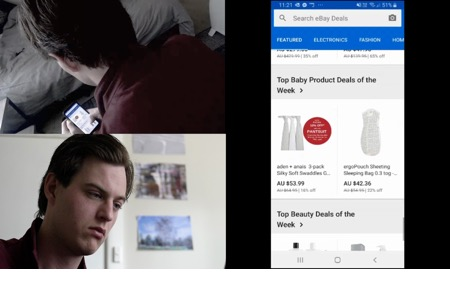 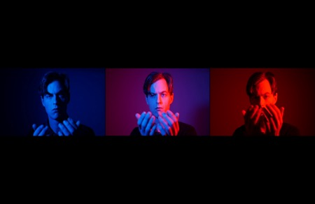
Fig 19a-b: Video Stills — Networked Mediation (2019)
Though the audience encounters the video stream perhaps only briefly, my aim with both the image-data manipulation and the arrangement of the screen interface, is to trigger subtle subconscious associations with the themes and ideas behind the piece. To achieve this I placed the screen showing “raw” video uncomfortably close to the wall and on the floor, hoping that would restrict access to a longer viewing. However, it became apparent during critiques that the audience was not sure if they were meant to view the video presentation in full, or dip in and out of it like a stream. The progressive breakdown and recomposition of the image across the screens was aimed towards the creation of different levels of engagement with the content. In the critique sessions people commented on feeling “frustrated” with their inability to easily understand and process the more mediated content. Further, by placing the “raw” content screen close to the wall, I attempted to encourage an intimate but brief engagement with the “raw” video footage. The effect was to encourage audiences to view the three screens as a display system and to find the relationships between the images, rather than foregrounding the more human-readable and digestible content.
For Clemens & Nash, the appearance of media in the world is due to a “protocol driven modulation process to and from display states” (2015, p.11). Display is thus the individuation of data from its undifferentiated state to a simulated phenomenon in the real world (2015, p.13). In its raw state, that of the physical process of switching between electrical states, data is undifferentiated. It needs to be translated into a display register or medium in order to be understandable by a human at any level. There are however different technical levels at which the data is viewed, and these involve the convergence of widely different protocols and algorithmic mediators before the data is readable by a lay audience. For example, a YouTube video would be viewed very differently by an everyday user, software designer, or computer hardware engineer, as the levels of differentiation and modulation of data would be specific to their understanding of the system. My intention with this project is to introduce to an audience not formally trained in these levels of data transmission and manipulation an idea of what modulation may be happening behind the scenes. Towards that end, in my work I have found it useful to think of the display as the specific modulation or differentiation of data (Clemens and Nash 2015, p.10). The construction of a digital image (or sound) is in this reading a performance of data. What appears on the screen is simply quantified to predictable results by the modulating device (e.g. using codecs and RGB display protocols) (2015, p.12). This process of modulation of data between different algorithmically-mediated states is the primary process that connects the seemingly disparate elements displayed on screen.
My practice-led-research thus investigates the modulation of data, code, spectator, technology, surveillance, and content between physical and symbolic states of display. The spectator interacts with work only insomuch as they are able to comprehend the localization of data to a display medium. Through extensive experimentation with image-data, content and space I have aimed to construct a detournement of Spectacular digital culture. The human’s place in an automated world remains unclear, but the ongoing goal of my research and practice is to shine light on concerns surrounding computing technolgoies and their ongoing effects on how we see ourselves and communicate with others.
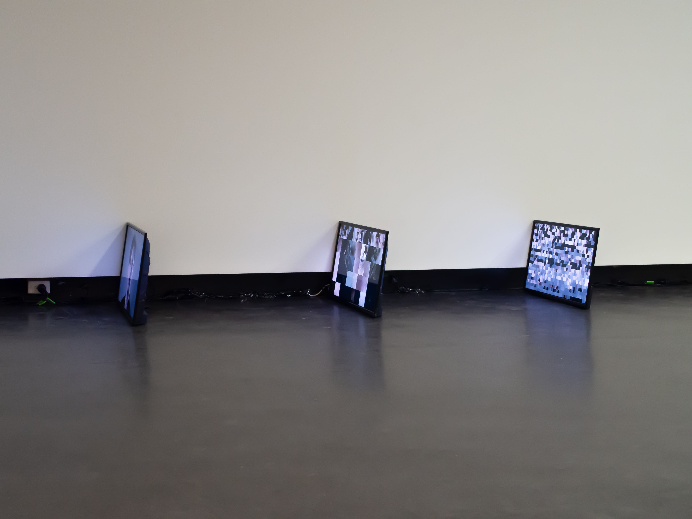

### Fig 20a-b: Second Trial Presentation, Sep 2019, Installation Views
CHAPTER FIVE
Self-Driving Cars on the Information Superhighway: Community of Practice
My practice sits within a global network of media artists that explore technology, data and surveillance and their impacts on society. In 2019, Trevor Paglen and Kate Crawford released ImageNet Roulette, which allows users to upload an image that is then classified using the “Person” subset of the ImageNet database. ImageNet is one of the largest object classification algorithms publicly available, one that is being used to train facial recognition and classification systems worldwide.

Fig 21: Paglen and Crawford: ImageNet Roulette (2019)
When I uploaded a self-portrait to the site, I received the classification of “Melancholic, melancholiac”; a clear value judgement based upon the expression and framing of the image. This application was intended by Paglen and Crawford to highlight the inherent hierarchies and sociopolitical judgements in Artificial Intelligence systems (2019, p.1). The fourteen million images on which the ImageNet database is trained are scraped from online sources and classified by side-hustle workers on Amazon’s Mechanical Turk platform (Paglen and Crawford 2019, p.12). The process of sorting people into categories is thus based upon the social and political bias of the anonymous online workers who label the images. This quickly becomes apparent by the way the categorisations are sorted. For example, according to the database there are only two categories for a person, “Male” and “Female”. This shows a serious bias, forgetting the identification of any person whose identity does not fall within these predefined categories (2019, p.15). The assumption of these datasets is that images of the world can be ordered and categorised into repeatable classifications. This is a profoundly deterministic viewpoint which implies that through images we are able to understand and sort the chaos of existence into neatly predefined categories. Categorization is thus always a social and political activity — the technical systems that underlie Artificial Intelligence are inescapably intertwined with the social and political values of the era in which they were constructed. Just as Paglen and Crawford’s work highlights these flaws, I am also consciously addressing the inherent bias of these networks in my work with thresholding and restructuring algorithms.
One way my project addresses these concerns is by cropping images based upon brightness. As a functional surveillance algorithm my experiments are useless. They have the opposite effect to classification algorithms: de-identifying any human subjects within the frame to a bundle of shifting luminance values and abstracting the frame beyond human readability. David Rokeby’s Sorting Daemon (2003) sorts a live camera feed by hue using a colour algorithm. In this work people are cropped and sorted according to arbitrary parameters set by the artist. This work was made in reaction to the spike in automated profiling of individuals during the Global War on Terror. It questions automated mechanisms for sorting surveillance footage by the use of a real time, interactive application.

Fig 22: David Rokeby - Sorting Daemon (2003)
Kyle McDonald works directly with code to create applications and installations that utilize data available on the internet. In his work Exhausting a Crowd (2015), surveillance cameras setup in Gwangju, London, Birmingham, and the Netherlands film public spaces. Users on the site are then invited to tag and track people within the frame, leading to a crowdsourced and often manic overload of speculative commentary.
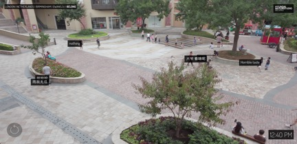
Fig 23: Kyle McDonald, Exhausting a Crowd (2015)
Open-sourced and uploaded to GitHub, this work shows the use of algorithmic mediation in a video feed in order to empower the user to make decisions about what is of interest in the frame McDonald, in turn, was himself influenced by The Girl Chewing Gum (1976) (Exhausting a Crowd Github, 2013), a video work made by John Smith, where a narrator absurdly directs action on a busy London Street.

Fig 24: John Smith, The Girl Chewing Gum (1976) 16mm, 12 mins, B/W, sound
As the video progresses it is revealed that the narration is not recorded in sync with the pictures seen on screen and becomes increasingly abstract and subjective in its description of events being recorded. This tactic of tagging and deconstructing a video from a remote location has had a notable effect on my work, although, I have chosen to allow the computing system to decide what is important rather than narrating the scene subjectively as in these works. In this way, my algorithmic process shares a thematic link to the chaotic labelling of Lozano Hemmer’s Subtitled Public (2013). In Hemmer’s work spectators are detected by cameras, then tracked and labeled with a randomly generated conjugated verb e.g. taste, inconvenience, within the gallery space. In Hemmer’s words, the work is intended to “highlight the arbitrariness of computerised surveillance systems” (Hemmer, para 2) in tagging and labelling human behaviour.
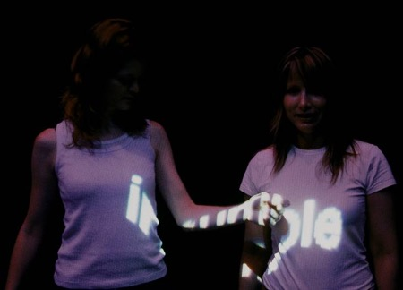
Fig 25: Lozano Hemmer Subtitled Public (2013)
Lauren McCarthy creates applications and software art which is inspired by the digital world: in particular, its effect on social behavior and privacy. In her work Lauren (2019), she takes on the role of a smart home assistant like that of Amazon’s Alexa. Users sign up on a website to get a kit of surveillance equipment delivered to their homes, after which McCarthy monitors their requests, answers questions, and retrieves information. This work looks at the ‘smart’ home concept in a new, critical light: Would we be comfortable if there was a real human listening in and watching our everyday activities rather than an easily dehumanized algorithm? While some works exist in a traditional institutional framework, others exist in software, some are web-based, and many combine methods of gallery and web/software presentation and performance. These artists all work with a common technological interface as the primary medium through which their art is enacted.
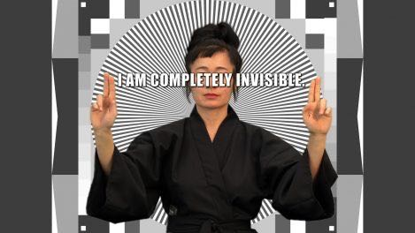
Fig 26: Hito Steyerl - How Not To Be Seen: A Fucking Didactic Educational .MOV File (2013)
As mentioned in chapter three, Hito Steyerl’s work has provided an important contextual marker in the way images are composed and distributed in the digital era. Her use of green screen, manipulated digital video, text to speech and found footage in How Not To Be Seen: A Fucking Didactic Educational .MOV File (2013) invites a critical awareness of how content and images are produced and distributed. Often ironic or tongue in cheek, this work has been particularly influential in the creation of content for my own project. In a 2013 interview regarding the project, Steyerl proposes that in the contemporary era the meaning of images has been unshackled from their singular content, instead gaining meaning cumulatively from its quantity and method of distribution (Kunak 2013, para 2). This sharpened my thinking regarding the breakdown and restructuring of images in my trial presentations, as well as my use of the aesthetics and formal tropes of digital culture to frame my video works e.g. the YouTube interface. Steyerl also mentions that surveillance capitalism has led to a state of “over-visibility” (2013, para 2), where people are scanned and interpreted as digital images. This state of increased visibility makes it harder for people to opt-out or disappear and, taking it further, Steyerl raises the question if people have now in fact “become images” (Kunak 2013 para 2). Considerations regarding the display medium were inspired by the, now considerable, history of artists working with video and screens within the gallery space. Harun Farocki’s work Workers Leaving the Factory in Eleven Decades (2006) shows twelve screens, playing video loops of found footage.
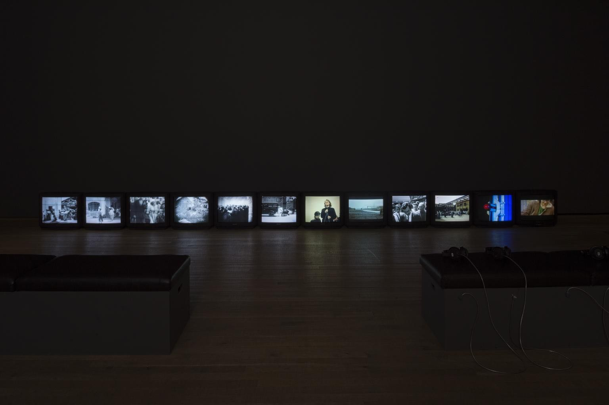
Fig 27: Harun Farocki - Workers Leaving the Factory in Eleven Decades (2006)
While our content may differ, Farocki’s use of multiple screens networked together by an associated image palette has both intrigued me and guided my research with regards to the place, use and status of the interface. Seen together, his video array in Workers Leaving the Factory in Eleven Decades (2006) suggest a system at play; there is a connective element in his use of space and content which makes the work greater than the sum of its individual parts. In Deep Play (2007), the 2006 World Cup is shown from twelve different angles. Computer generated imagery melds with broadcast footage, providing a forensic deconstruction of the event from different angles. The “clean feed” (Diederichsen 2007) is abstracted with visualisations of the flow of play generated algorithmically. Farocki also suggests digital culture by explaining that the feed is “classified, assessed and transferred to other systems” (Diederichsen 2007) in the eleven nodes accompanying the clean signal.

Fig 28: Harun Farocki — Deep Play (2007)
In conclusion, I have shown a variety of artists who ask similar questions to myself in the progression of this research project. These artists form a representative sample defining the scope of my inquiry, though there are many significant works which are not mentioned. A defining factor in their work is a questioning of how data, performed through media, functions within society and by whom it is being manipulated. How that function is updated with the advent of new technologies remains unclear, but it is a question which will undoubtedly be of interest to artists such as myself as the Information Age progresses. I will continue to ask these questions: retrieving the human-readable fragments in an ever-expanding sea of data and scrutinizing the collapsing divide between the online and offline worlds. As humanity’s perception of itself becomes increasingly augmented by computing technologies, the artists’ role may become less to question how data functions in a human world, but how humans can reconcile their new dual identity as dataset and organism.
REFERENCES AND ARTWORKS
Barile, N., 2017, ‘Branding, selfbranding, making - the neototalitarian relation between spectacle and prosumers in the age of cognitive capitalism’, in M Brizarelli & E Armano (eds.), The Spectacle 2.0: Reading Debord in the Context of Digital Capitalism, University of Westminster Press, London, UK., pp. 152-164.
Briziarelli, M., Armano, E., 2017, The Spectacle 2.0: Reading Debord in the Context of Digital Capitalism, University of Westminster Press, London, UK.
Clemens, J. Nash, A., 2015. ’Being and Media: Digital ontology after the event of the end of media’. The Fibreculture Journal, (24 2015: Images and Assemblages).
Diederichsen, D 2007. ‘Deep Play’. viewed 02 June 2019 https://www.harunfarocki.de/installations/2000s/2007/deep-play.html
Debord, G., 1967. The Society of the Spectacle. Translated from French by D. Nicholson Smith. 1994, New York: Zone Books
Farocki, H 2006. ‘Workers Leaving the Factory in Eleven Decades’. viewed 02 June 2019 https://www.harunfarocki.de/installations/2000s/2007/deep-play.html
Groys, B. 2017, ‘Art, Technology and Humanism’, e-flux journal, #82 (May 2017), viewed 7 June 2019, https://www.e-flux.com/journal/82/127763/art-technology-and-humanism/
Hemmer, L. 2005 ‘Subtitled Public’. Interactive Installation, viewed 7 Oct 2019 http://www.lozano-hemmer.com/artworks/subtitled_public.php
Kunak, G., 2013, ‘Interview // Hito Steyerl: Zero Probability and the Age of Mass Art Production’, Nov 19, viewed 02 Oct 2019 http://www.berlinartlink.com/2013/11/19/interview-hito-steyerl-zero-probability-and-the-age-of-mass-art-production/
McDonald, K. 2013, ‘Exhausting a Crowd’, Interactive Net Artwork, viewed 03 Oct 2019, https://www.exhaustingacrowd.com/beijing
McDonald, K. 2013, ‘Exhausting a Crowd’, GitHub Page, viewed 03 Oct 2019, https://github.com/kylemcdonald/ExhaustingACrowd
McCarthy, L. 2019, ‘LAUREN’. Interactive Artwork http://www.lauren-mccarthy.com/LAUREN
Paglen, T, Crawford, K. 2019, ‘Excavating AI: The Politics of Images in Machine Learning Training Sets’, viewed 29 September 2019, https://www.excavating.ai//
Paglen, T, Crawford, K. 2019, ‘ImageNet Roulette’, Net Artwork, viewed 20 September 2019, https://imagenet-roulette.paglen.com/
Rokeby, D. 2003, ‘Sorting Daemon’, Interactive Installation.
Rokeby, D., 1998. The construction of experience: Interface as content. Digital Illusion: Entertaining the future with high technology, pp.27-48.
Steyerl, H., 2013. Too much world: Is the Internet dead?. e-flux journal, 49, pp.1-10.
Steyerl, H, 2018,. ‘Turning Points: Technology Has Destroyed Reality’, New York Times, Dec 5, viewed 04 June 2019, https://www.nytimes.com/2018/12/05/opinion/technology-has-destroyed-reality.html
Steyerl, H., 2015, ‘Factory of the Sun’, Installation
Steyerl, H., 2013, ‘How Not To Be Seen: A Fucking Didactic Educational .MOV File, Video
Wong, B., 2019, ‘An Instagram with no ‘likes’ could have a big impact on mental health’, Huffington Post, 11 May, viewed 04 June 2019, https://www.huffingtonpost.com.au/entry/instagram-hiding-likes-mental-health_l_5cd092d3e4b0548b735e50bc. Zuboff, S. 2015. Big other: surveillance capitalism and the prospects of an information civilization. Journal of Information Technology, 30(1), pp.75-89